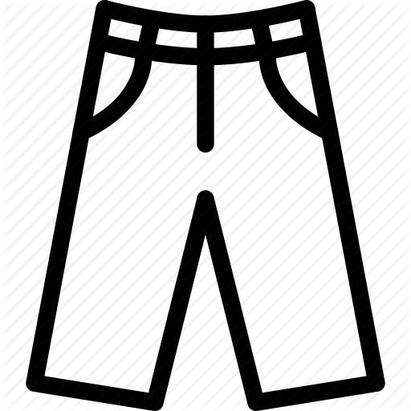

One man's trash is another man's treasure,
but in this game, you must create your own treasures out of your own trash.
The objective of this game is to move your character around using the arrow keys towards the tools (the jeans, the scissors, and the spool). By grabbing these items, we are collecting the tools we are reducing, reusing, and recycling old items and making them new again, eliminating the populous amounts of trash cluttering the planet.
Be careful of the collecting pile of trash under the platforms! Get caught by the growing wave and it's GAME OVER!

The Jeans
The Green Horizon family has been working together to create a program for recycling old jeans into new creations. Purses, wallets, pencil holders, and so much more are made in our leader-guiding workshops, in which we create amazing products out of old, unwanted pieces of clothing.

The Scissors
A simple pair of scissors can change a piece of old, unwanted clothing into something fantastic and new. The cutting edge design created by our students in our workshops, such as the Repurposing and Upcycling project, was once an old, thrown away product, likely to find its way into a landfill at one point or another. With our work, we are hoping to eliminate a large portion of this mess and make it into something monumental.
The Spool
The factor that ties the whole project togther, the spool entangles all necessary factors of the piece and keeps it connected. As a needed tool in the creation process, the spool is used in the majority of our current projects, including the current Repurposing and Upcycling work that our group has begun.
Learn
Find out how you can make an impact in the world by promoting environmental awareness today!
About
Learn more about us!
Events
Get connected with our events, view some of the projects we are currently working on, or
Green Horizon
Copyright © 2015 · All Rights Reserved · Home